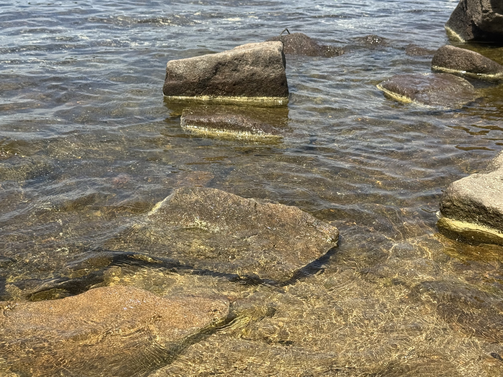

Au-bord-de-lac
Dans cette ensemble, j’ai façonné de plus petites « pierres en papier », que j’ai immergées dans des mélanges d’eau et de poudre de charbon à différentes concentrations. L’intention était d’explorer les processus de sédimentation et d’adhérence de la matière dans le temps.
Ces traces, apparues progressivement, rappellent les pierres façonnées par l'érosion au bord d’un lac. J’ai ainsi agencé ces éléments de manière à composer une forme évocatrice des lignes laissées par le retrait et l’écoulement de l’eau.



×